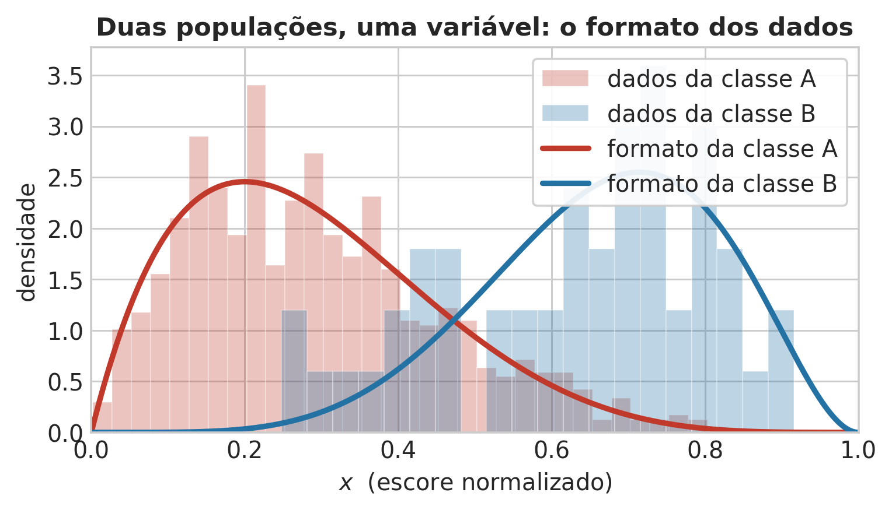


Aula 1 — Fundamentos Estatísticos do Aprendizado Supervisionado
2026-08-24
Todo algoritmo supervisionado é a composição de três peças: uma suposição distributiva, uma verossimilhança e uma regra de decisão.
| Prática do dia a dia | Formalismo estatístico underlying |
|---|---|
| Mínimos Quadrados | Máxima Verossimilhança sob erro Gaussiano |
| Regularização (L1 / L2) | Inferência Bayesiana com Priori (Laplace / Gaussiana) |
| Resíduo de previsão | Gradiente da log-verossimilhança |
Usados em paralelo. Divergências de notação ou ênfase são discutidas explicitamente.
O que exatamente significa “aprender a distribuição dos dados”?
Uma distribuição é o formato que os dados assumem no espaço.

O mesmo objeto, em mais dimensões
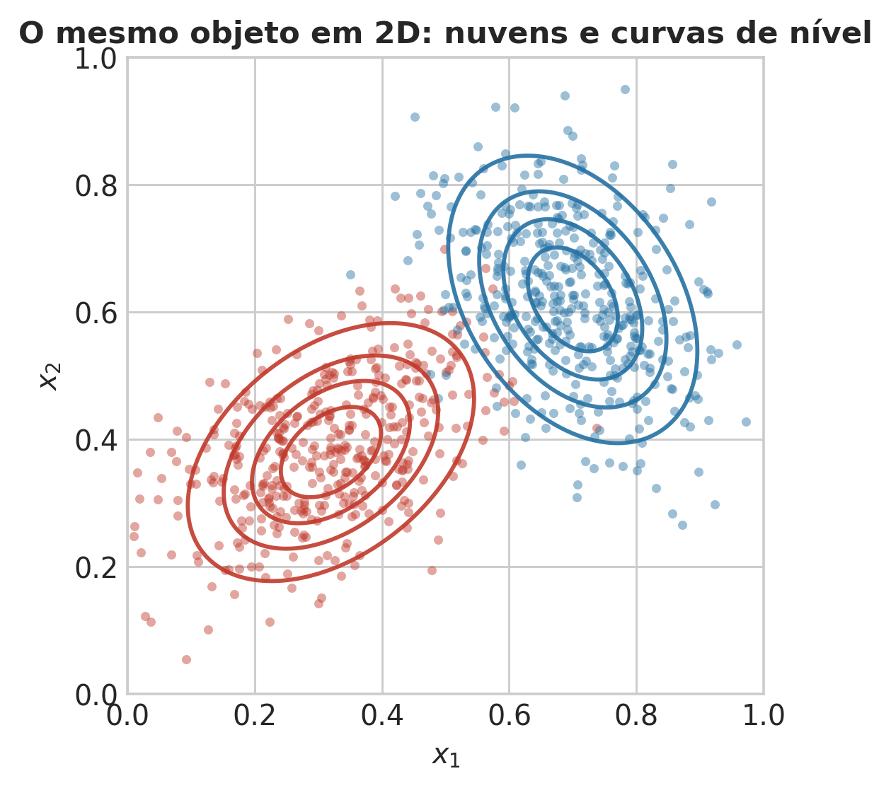
Regra mais simples possível: um limiar \(t\).
\[ x \le t \;\Rightarrow\; \text{classe A} \qquad x > t \;\Rightarrow\; \text{classe B} \]
A resposta usual: no cruzamento das curvas.
Anote. Ela está errada.
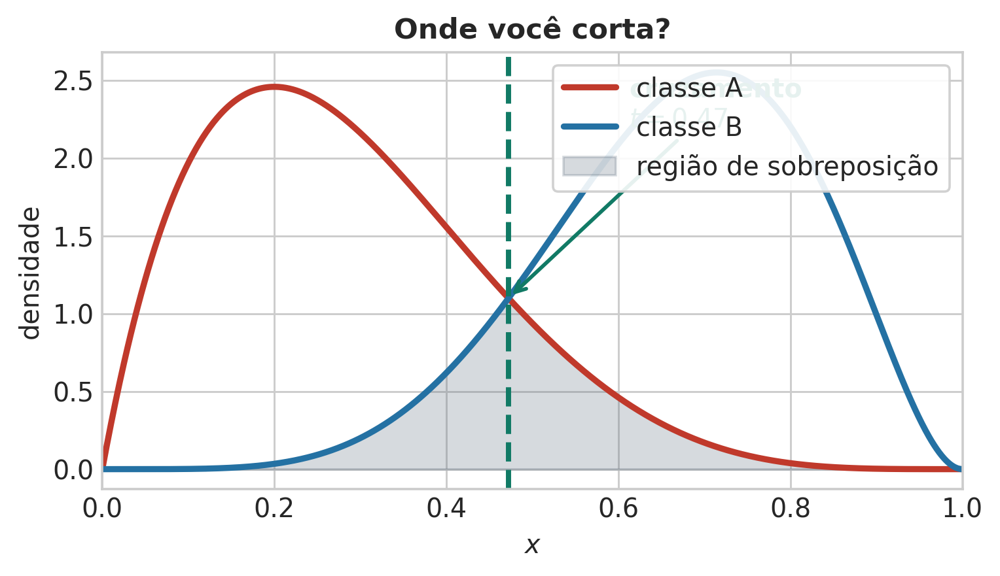
| Intuitivo | Técnico | Também chamado |
|---|---|---|
| alarme falso | Tipo I | falso positivo |
| escape | Tipo II | falso negativo |
Atenção: “Tipo I/II” só existe depois de declarar a hipótese nula. Aqui: A = normal (nula), B = anômala.
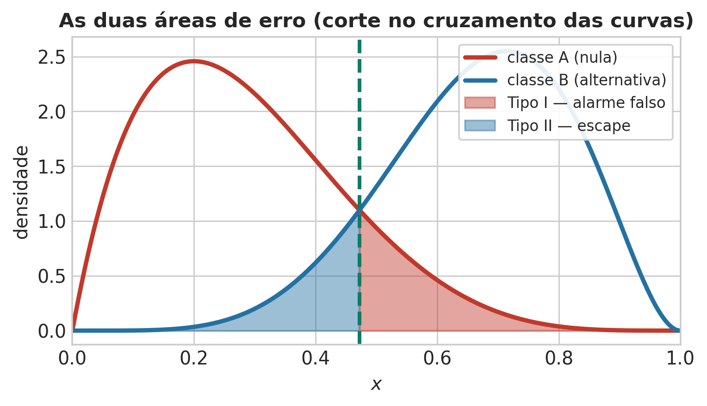
Mover o corte troca uma área pela outra. Nenhum corte zera as duas.
\(\Rightarrow\) erro de Bayes: irredutível, é propriedade dos dados.
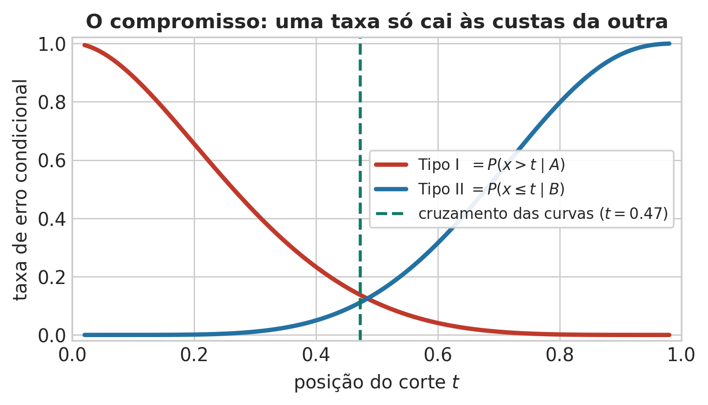
O que estava escondido: as classes não são igualmente frequentes.
\[ 950 \text{ pontos da classe A} \qquad 50 \text{ pontos da classe B} \]
Vamos contar os erros de verdade — no cruzamento e num corte deslocado.
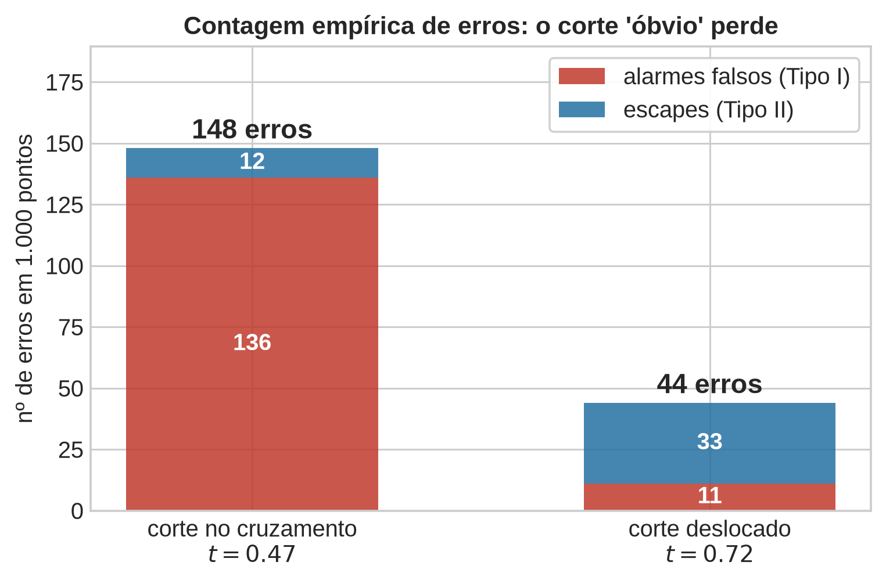
O corte deslocado erra muito menos.
E ele não veio de tentativa e erro — vem de um princípio.
Onde a justificativa verbal falhou:
“igualmente plausíveis” \(\ne\) “igualmente prováveis”
Por que o corte “no cruzamento das curvas” está errado, e o que falta entrar na conta?
Escreva, com suas palavras, e compare a sua frase com a de um colega antes de avançar (2 min).
Dica
Julgue V ou F — a questão só conta se acertar os 4 itens:
Dica
Dica
(Escreva uma frase. Compare com um colega antes de avançar — 2 min.)
Todas as escolhas da aula derivam de duas regras básicas:
Invertendo a regra do produto (\(p(x, \mathcal{C}_k) = p(\mathcal{C}_k \mid x)\,p(x)\)):
\[ \boxed{p(\mathcal{C}_k \mid x) = \frac{p(x \mid \mathcal{C}_k)\,p(\mathcal{C}_k)}{p(x)}} \]
\[\text{Posteriori} \;\propto\; \text{Verossimilhança} \;\times\; \text{Priori}\]
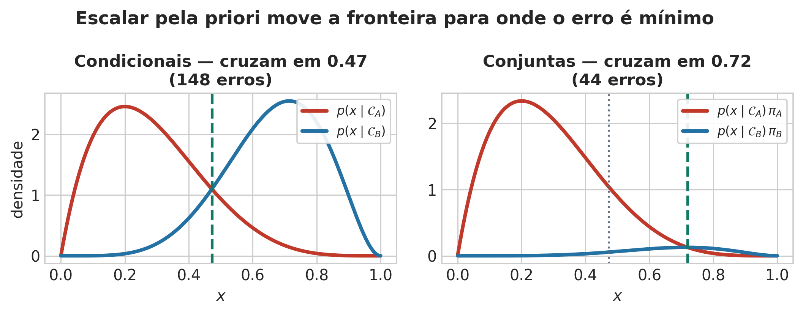
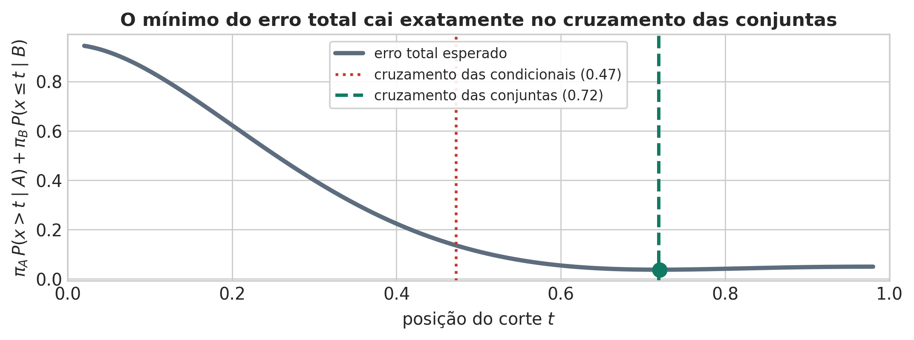
Prevalência \(p(D) = 0{,}01\). Sensibilidade \(p(+\mid D) = 0{,}90\). Falso positivo \(p(+\mid\bar D) = 0{,}03\).
Teste positivo. Probabilidade de estar doente?
\[ p(D\mid+) = \frac{0{,}90 \times 0{,}01}{0{,}90\times0{,}01 + 0{,}03\times0{,}99} \approx \mathbf{0{,}233} \]
Em 10.000 pessoas: 90 verdadeiros positivos contra 297 falsos positivos.
Mesma lição do Passo 4, no caso discreto: a priori decide.
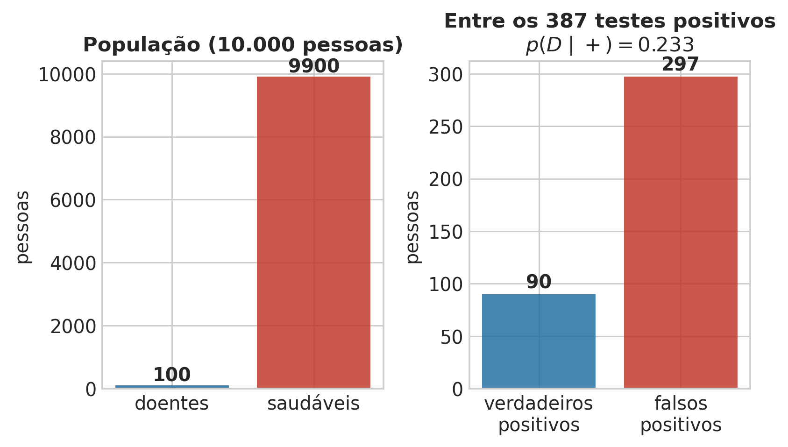
No exemplo da triagem médica, qual número é a priori? Qual é a verossimilhança? Qual é a evidência?
Escreva os três nomes ao lado dos três números do enunciado, e confira com um colega (2 min).
Dica
Julgue V ou F — a questão só conta se acertar os 4 itens:
Dica
Dica
(Escreva os três nomes ao lado dos três números. Confira com um colega.)
O comportamento de \(p(x)\) quando \(|x| \to \infty\) define a sensibilidade a eventos extremos.
Por que ajustar uma Gaussiana a escores de crédito normalizados em \([0,1]\) é, no mínimo, arriscado?
Escreva um argumento em uma frase, sem usar a palavra “feio” (2 min).
Dica
(Uma frase, sem usar a palavra “feio”. Compare com um colega.)
Dados em \([0,1]\): escores normalizados, taxas, proporções, probabilidades calibradas.
O suporte do modelo é uma decisão de modelagem, não uma tecnicalidade.
\[ \operatorname{Beta}(x\mid a,b) = \frac{\Gamma(a+b)}{\Gamma(a)\Gamma(b)}\,x^{a-1}(1-x)^{b-1} \]
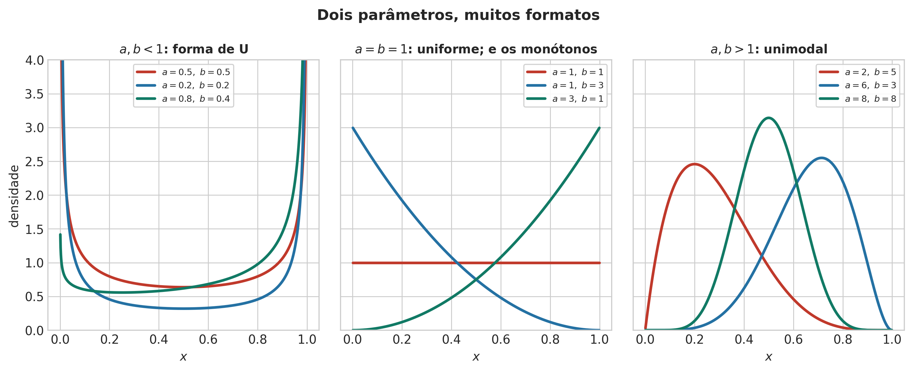
Momentos — forma fechada. Com média \(m\) e variância \(v\) amostrais, se \(v < m(1-m)\). Máxima verossimilhança — não tem forma fechada. Resolvida numericamente via scipy.stats.beta.fit. Não prometa uma fórmula que não existe.
Armadilha: zeros e uns exatos
Correções: clipping declarado, Smithson–Verkuilen, modelos zero/one-inflated.
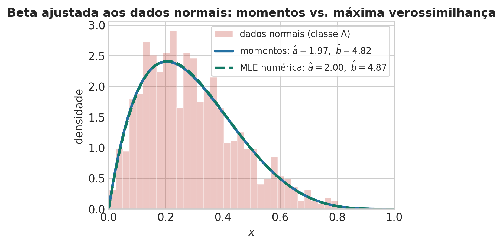
A distribuição Beta
Julgue V ou F — a questão só conta se acertar os 4 itens:
Dica
Sem anomalias rotuladas: ajustar \(p(x)\) só nos dados normais.
Região de exclusão: cauda \(\{x>t\}\) ou conjunto de nível \(\{x : p(x)<\lambda\}\).
\[ \text{Tipo I} = P(x>t) = 1 - I_t(a,b) \qquad\Longrightarrow\qquad t_\alpha = I^{-1}_{1-\alpha}(a,b) \]
O limiar é um quantil do modelo; \(\alpha\) vale por construção.
Com uma única densidade ajustada, o erro Tipo II não está definido.
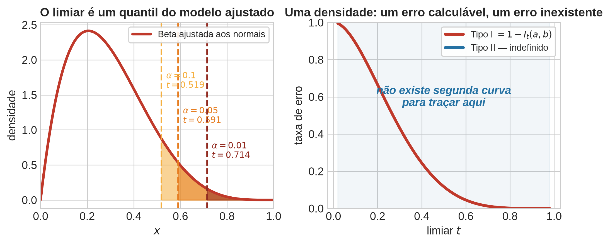
Voltamos às populações A e B dos Blocos 1–4. Até aqui, todo erro pesou o mesmo (perda 0-1).
Três perguntas que faltam:
Função de perda \(L(\text{decisão}, \text{verdade})\) — resume o prejuízo de cada erro.
\[ C_I \pi_A f_A(t) = C_{II}\, \pi_B f_B(t) \quad\Leftarrow\quad \text{corte ótimo} \]
\(C_I = C_{II}\) \(\Rightarrow\) recupera \(T_{CONJ}\) do Bloco 4. Perda 0-1 é o caso particular, não o caso geral.
Exemplo: escapar uma anomalia custa 10× mais que um alarme falso.
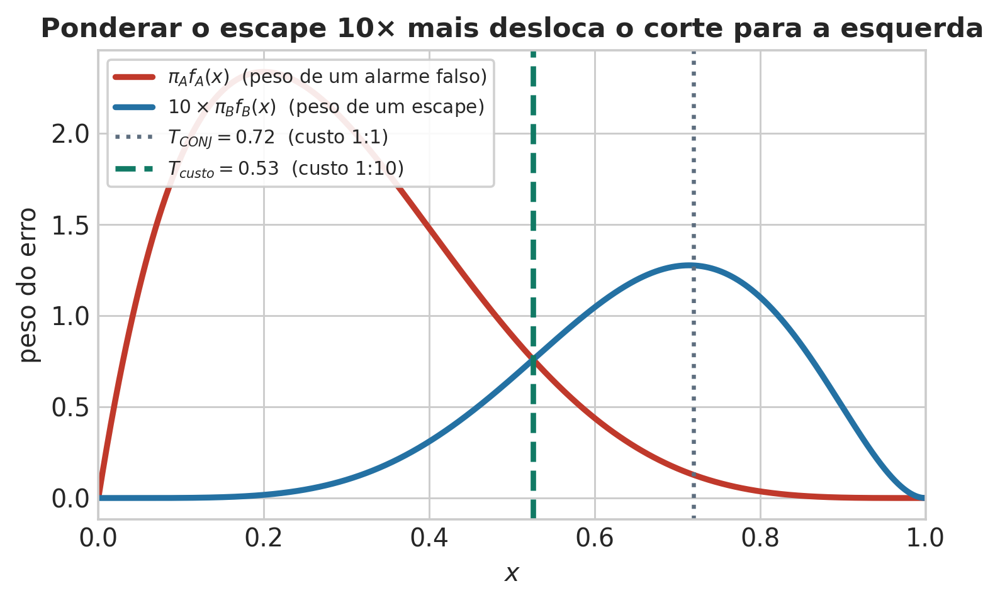
Matriz de confusão — positivo = classe B (a rara):
| previsto A | previsto B | |
|---|---|---|
| real A | VN | FP (alarme falso) |
| real B | FN (escape) | VP |
\[ \text{precisão}=\frac{VP}{VP+FP} \qquad \text{recall}=\frac{VP}{VP+FN} \]
Paradoxo: com \(\pi_A=95\%\), um classificador que sempre diz “A” já acerta \(95\%\) — e nunca encontra uma anomalia.
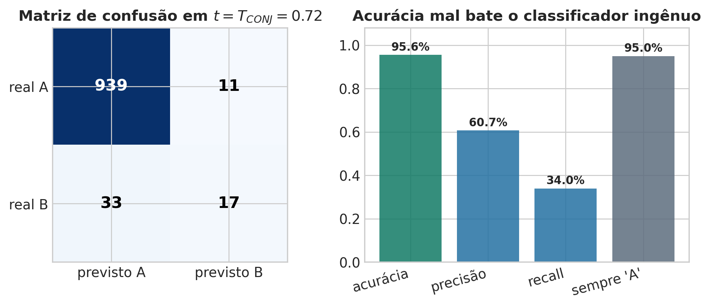
Se a acurácia de 95,6% mal supera o classificador ingênuo, a fronteira ótima do Bloco 4 está errada?
Escreva sua resposta e compare com um colega antes de avançar (2 min).
Dica
Julgue V ou F — a questão só conta se acertar os 4 itens:
Dica
ROC = mesmo sweep de \(t\) do Bloco 1, replotado: FPR (eixo \(x\)) vs. recall (eixo \(y\)).
Diagonal = acaso (AUC \(=0{,}5\)). Separação perfeita = AUC \(=1{,}0\).
Propriedade: a curva ROC não depende da priori — só das condicionais \(f_A,f_B\). A priori move o ponto de operação, não a curva.
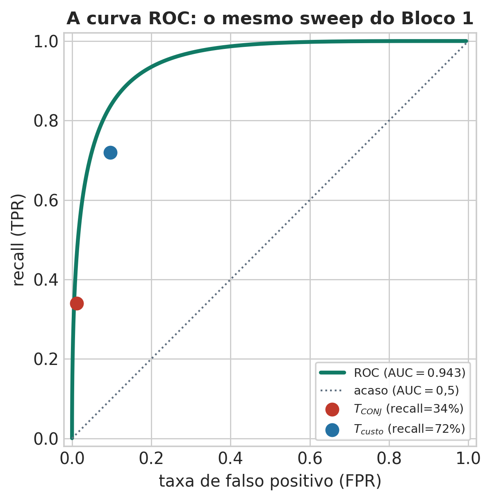
Toda regra até aqui decide sempre — mesmo onde a posteriori está quase empatada.
Regra de Chow: rejeite quando \(\max_k p(\mathcal{C}_k\mid x) < \theta\).
Define uma faixa de indecisão, não mais um ponto de corte.
Só compensa se o custo da revisão humana for menor que o custo esperado do erro evitado.
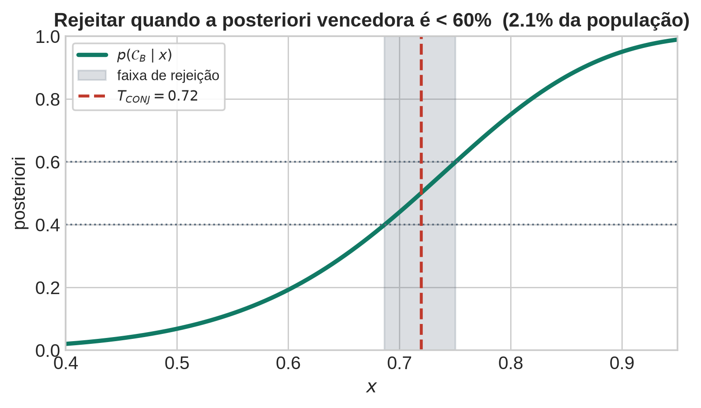
E o ponto negativo: com uma densidade, só o Tipo I é calculável.
Proxima Aula: Tudo isto usou uma variável. Com \(d\) variáveis:
\[ p(x\mid\mathcal{C}_k) \in \mathbb{R}^d \;\longrightarrow\; M^d \text{ células} \]
Naive Bayes — a primeira suposição estrutural do curso:
\[ p(x\mid\mathcal{C}_k) = \prod_{i=1}^d p(x_i\mid\mathcal{C}_k) \]
O preço dessa suposição é o assunto da próxima aula.
UNICAMP — Instituto de Computação